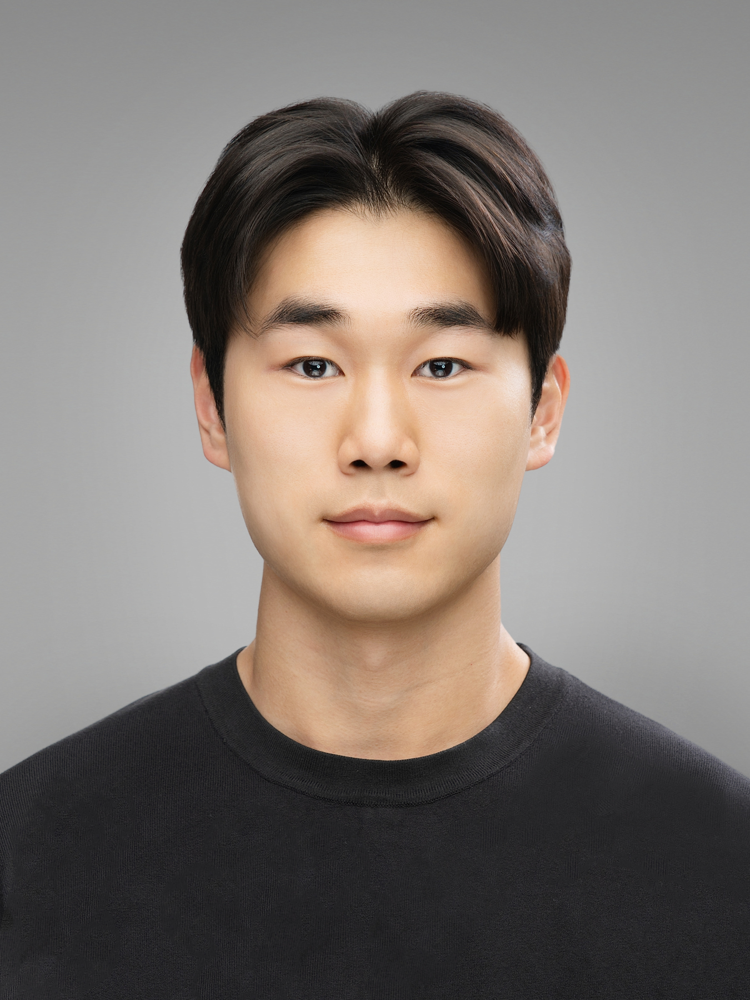

M.S. Student
KAIST · Advanced Machine Intelligence Lab (AMI Lab)
2026.08 – Current

M.S. Student, Advanced Machine Intelligence Lab (AMI Lab) @ KAIST
I am a master's student in the Advanced Machine Intelligence Lab at KAIST. My research focuses on physically grounded 3D/4D reconstruction of humans and scenes from sparse, noisy, and blurred observations — building high-fidelity digital twins with generative priors.
Building physically grounded 3D/4D reconstruction of humans and scenes from sparse, noisy, and blurred observations, toward high-fidelity digital twins using generative priors.
M.S. Student
KAIST · Advanced Machine Intelligence Lab (AMI Lab)
2026.08 – Current
Intern
KAIST · Advanced Machine Intelligence Lab (AMI Lab)
2025.06 – 2026.07
Intern
UNIST · Lab. of Advanced Imaging Tech. (LAIT)
2024.07 – 2025.06
M.S. in Metaverse
KAIST, Graduate School of Metaverse
Daejeon, Korea
2026.08 – Current
B.S. in Electrical Engineering
UNIST
Ulsan, Korea
2020.03 – 2026.02